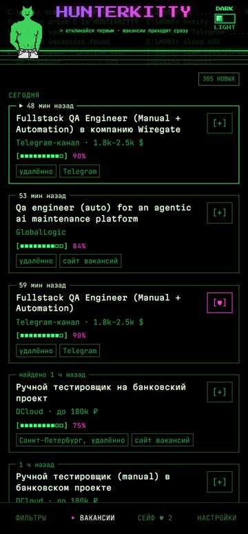
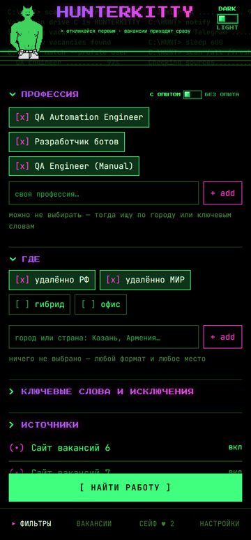
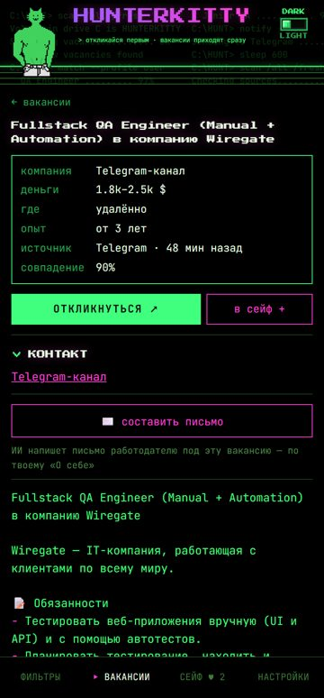

Свой продукт: сервис поиска работы в Telegram
Сделал сам от идеи до поддержки: собрал требования, продумал логику и дизайн, написал, протестировал, запустил на сервере и веду пользователей.
PythonPostgreSQLTelegram Bot + Mini AppLinux, systemdpytestИИ
30+сайтов-источников
~200Telegram-каналов
10 000+вакансий в день
~580автотестов
- Собирает вакансии из десятков источников через API и парсинг, убирает дубли, рекламу и мошенников.
- Подбор под человека: профессия, ключевые слова, исключения, зарплата, опыт, формат работы.
- ИИ пишет сопроводительное письмо под конкретную вакансию.
- Мониторинг источников, алерты о сбоях, логи, ночные бэкапы, автоподъём на сервере.



QA и AI QA
Тестирую веб, мобильные приложения и API, автоматизирую на Playwright, проверяю качество ответов ИИ-моделей.
AI QALLMPythonOllama
Тестирование ИИ-ассистента поддержки магазина
Чат-бот отвечает покупателям по базе знаний. Написал 36 тест-кейсов в 7 группах: факты, выдумки (галлюцинации), prompt injection и утечка системного промпта, персональные данные, тон и темы вне магазина, язык ответа, стабильность. Проверки: автоматические правила на Python и второй ИИ в роли судьи. Сравнил две версии промпта: «на скорую руку» и исправленную по найденным багам.
- Нашёл, что первая версия выдумывает характеристики товаров и условия доставки, которых нет в базе знаний.
- Нашёл, что ИИ-судья сам ошибается и путает «не упомянуто» с «выдумано»: его нельзя использовать без ручной проверки выборки.
PlaywrightTypeScriptAPI
Автотесты для финтех-приложения
Фреймворк UI- и API-тестов: Page Object, проверки ключевых сценариев, API-тесты.
Техподдержка L2: разборы инцидентов
Три реальных сбоя в Telegram-сервисе с фоновыми задачами, который я веду. Как нашёл причину, что починил и как сделал, чтобы не повторилось.
Сборщик данных молча вставал на 15-18 часов
- Симптом
- Уведомления из 190 источников из 200 приходили с опозданием почти на сутки. Ошибок нет, процесс «живой».
- Как нашёл
- Посмотрел не на процесс, а на данные: время последней проверки каждого источника в базе застряло на одном моменте.
- Причина
- Дневной лимит внешнего API на поиск источников. Кэш сохранялся только при штатном выключении, поэтому после каждого перезапуска все источники искались заново и съедали лимит, а ожидание блокировало весь цикл.
- Исправление
- Свой кэш, который пишется сразу. Долгое ожидание пропускает один источник, а не останавливает все. Алерт, если данные старше 30 минут.
Сервис лежал 10 часов, а логов не было
- Симптом
- Бот не отвечал, уведомления не приходили. Узнал от пользователя.
- Как нашёл
- По базе: последняя активность пользователей и записи всех источников оборвались в одну минуту.
- Причина
- Восстановить не удалось: логи писались только в консоль. Честно записал «причина неизвестна» и чинил наблюдаемость.
- Исправление
- Логи в файлы с ротацией, crash-лог со стеком при падении, команда /health, переезд на сервер с автоподъёмом процессов, алерты.
Кнопки бота зависали у всех пользователей
- Симптом
- Ответ на нажатие через 10-30 секунд, иногда «бот не отвечает».
- Как нашёл
- Сопоставил время жалоб со временем фоновых задач: совпадало с массовым пересчётом подбора.
- Причина
- Тяжёлые вычисления шли в том же процессе, который отвечает пользователям. Потоки не помогли из-за GIL.
- Исправление
- Интерфейс и фоновые задачи разделены на два процесса, пересчёт в пуле процессов.
Внедрение CRM
Помогаю бизнесу настроить CRM под свои процессы и реально начать в ней работать.
amoCRMворонкироботыAPIв работе
amoCRM для онлайн-школы иллюстрации «Чёрный кот»
- Требования и схема продаж: заявка → пробный урок → оплата → ученик → продление.
- Воронки, поля сделок и контактов, причины отказа, права ролей.
- Роботы: задачи менеджеру, напоминания ученикам, смена этапов.
- Заявки с сайта сразу в CRM, без потерь и дублей.
- Чек-лист приёмки, тестирование перед запуском, инструкция для менеджеров.
Интеграции и автоматизация
Связываю сервисы через API и вебхуки и автоматизирую рутину.
n8namoCRM APIWebhooksИИTelegramв работе
Заявки с сайта в amoCRM через n8n
- Сайт → n8n → amoCRM API: контакт и сделка с заполненными полями, проверка дублей по телефону.
- ИИ оценивает, насколько заявка «горячая», и пишет короткую сводку в сделку.
- Уведомление менеджеру в Telegram, строка в Google Таблицу для отчёта.
- Повторы и алерт, если CRM не ответила.
Сбор данных из 230+ источников
В своём продукте связал 30+ сайтов, их API и около 200 Telegram-каналов в один поток с дедупликацией, классификацией и уведомлениями. Подробнее выше.
Сайты
Пять лендингов с анимацией: дизайн, вёрстка, адаптив, формы. По образованию художник-дизайнер.